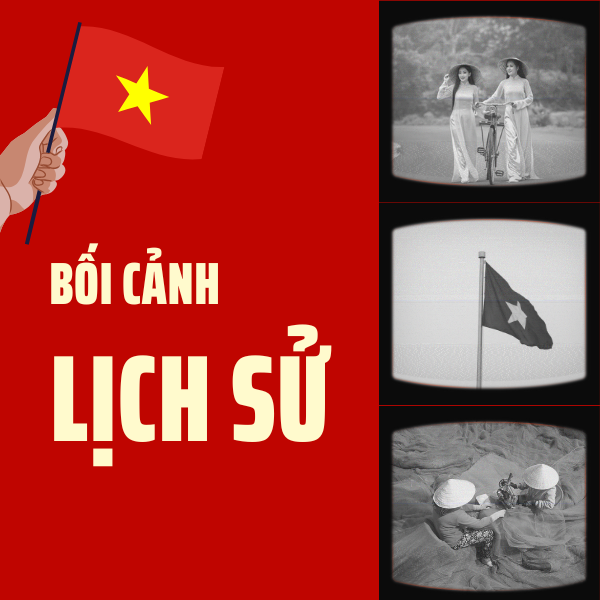
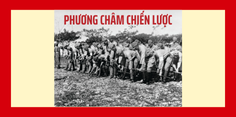
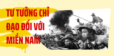
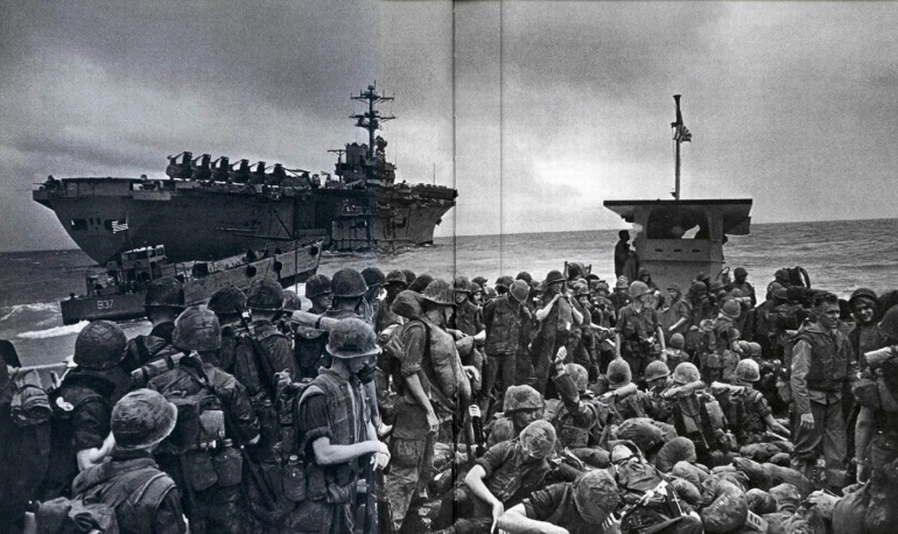
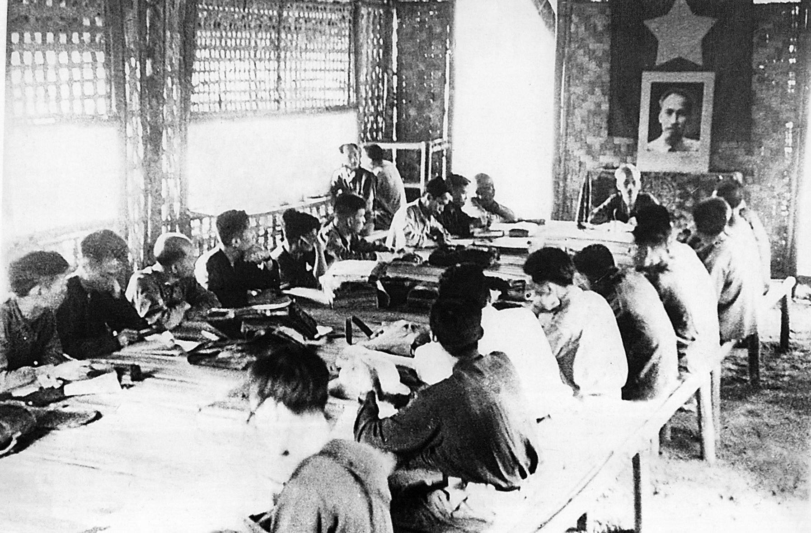
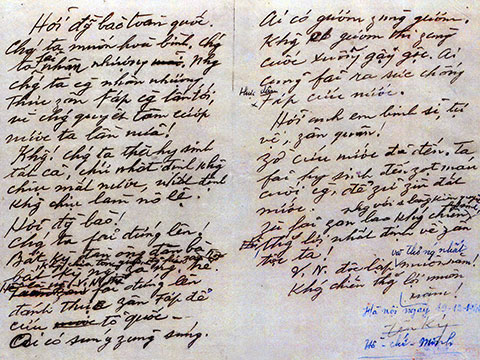
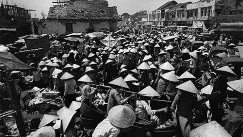
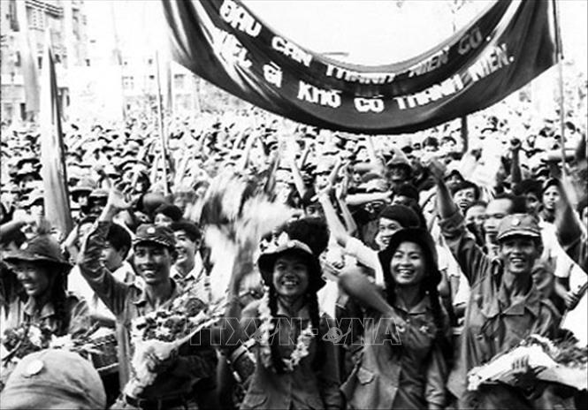
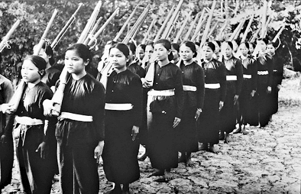
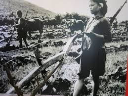

LỊCH SỬ ĐẢNG CỘNG SẢN


Di chúc của Chủ tịch Hồ CHí Minh
"Còn non, còn nước, còn người
Thắng giặc Mỹ, ta sẽ xây dựng hơn mười ngày nay!"
- Trích Di chúc Chủ tịch Hồ Chí Minh

Đường lối kháng chiến chống Mỹ
cứu nước của Đảng
Chiến tranh đặc biệt thất bại , Chiến tranh cục bộ bắt đầu
“Chiến tranh đặc biệt” của địch dần lộ rõ nguy cơ thất bại
+Các chiến dịch như Ấp Bắc (1963),Bình Giã (1964-1965) giáng đòn mạnh vào chiến lược “Chiến tranh đặc biệt”.
Quân đội Sài Gòn yếu kém, thiếu tinh thần chiến đấu.
Kế hoạch ấp chiến lược bị phá sản -> nhân dân nổi dậy phá ấp, giải phóng nhiều vùng nông thôn.
Mỹ tăng cường viện trợ nhưng không hiệu quả.
Saucuộc đảo chính lật đổ Ngô Đình Diệm (11/1963), chính quyền Sài Gòn rơi vào bất ổn, liên tục thay đổi lãnh đạo, chia rẽ nội bộ.
-

Biểu tình của người dân và Phật tử -

Đảo chính tại cổng Dinh Tổng thống Ngô
Mỹ khởi động "Chiến tranh cục bộ"
+Tổng thống Mỹ Lyndon B. Johnson quyết định tiến hành chiến lược “Chiến tranh cục bộ” ở miền Nam.
“Chiến tranh cục bộ”: là hình thức chiến tranh trong chiến lược toàn cầu “phản ứng linh hoạt” của Mỹ, biểu hiện -> Mỹ đưa quân chiến đấu cùng các nước đồng minh trực tiếp tham chiến, đóng vai trò chủ yếu trên chiến trường miền Nam; quân đội Sài Gòn đóng vai trò hỗ trợ và bình định.
Ngày 8-3-1965: Quân Mỹ đổ bộ Đà Nẵng. Đồng thời Mỹ mở cuộc chiến tranh phá hoại bằng không quân và hải quân đánh phá miền Bắc nhằm làm suy yếu miền Bắc, ngăn sự chi viện cho cách mạng miền Nam.
Phát động kháng chiến toàn quốc
Hội nghị lần thứ 11 ( 25 đến 27-3-1965 ) và lần thứ 12 ( 21 đến 27-12-1965 ) của Ban Chấp hành Trung ương Đảng đã phát động cuộc kháng chiến chống Mỹ, cứu nước trên phạm vi toàn quốc và hạ quyết tâm: “Động viên lực lượng của cả nước, kiên quyết đánh bại cuộc chiến tranh xâm lược của đế quốc Mỹ trong bất cứ tình huống nào, để bảo vệ miền Bắc, giải phóng miền Nam, hoàn thành cách mạng dân tộc dân chủ nhân dân trong cả nước, tiến tới thực hiện hòa bình thống nhất nước nhà”.
Nội dung đường lối kháng chiến và Tư tưởng chỉ đạo chung - Đại hội lần thứ III


Quyết Tâm Chiến Lược
Dù tình hình chiến tranh ngày càng ác liệt, Đảng khẳng định nhân dân ta có đủ điều kiện và sức mạnh để đánh bại Mỹ.
Cuộc chiến tranh xâm lược của Mỹ ở miền Nam là một cuộc chiến tranh thực dân mới, chứa đầy mâu thuẫn chiến lược và không thể cứu vãn được tình thế bế tắc của chúng: từ lực lượng, chính trị đến chiến lược toàn cầu.
Với tinh thần “Quyết tâm thắng giặc Mỹ xâm lược”, Đảng phát động kháng chiến chống Mỹ, cứu nước là nhiệm vụ thiêng liêng của cả dân tộc.
Mục Tiêu Chiến Lược
Kiên quyết đánh bại cuộc chiến tranh xâm lược của đế quốc Mỹ trong bất kỳ tình huống nào.
Nhằm bảo vệ miền Bắc, giải phóng miền Nam, hoàn thành cách mạng dân tộc dân chủ nhân dân trong cả nước.
Tiến tới thực hiện hòa bình thống nhất nước nhà.

Phương Châm Chiến Lược
Đánh lâu dài, dựa vào sức mình là chính.
Càng đánh càng mạnh, cố gắng mức độ cao.
Tập trung lực lượng cả 2 miền, tranh thủ thời cơ giành thắng lợi quyết định trong thời gian ngắn trên chiến trường miền Nam.

Tư Tưởng Chỉ Đạo Đối Với Miền Nam
Giữ vững và phát triển thế tiến công, kiên quyết tiến công và liên tục tiến công.
Tiếp tục kiên trì phương châm kết hợp đấu tranh quân sự với chính trị, triệt để thực hiện ba mũi giáp công, đánh địch trên cả 3 vùng chiến lược.
Quân sự có tác dụng quyết định trực tiếp và giữ một vị trí ngày càng quan trọng.
Tư Tưởng Chỉ Đạo Đối Với Miền Bắc
Chuyển hướng xây dựng kinh tế, đảm bảo tiếp tục xây dựng miền Bắc vững mạnh về kinh tế và quốc phòng.
Tiến hành cuộc chiến tranh nhân dân chống chiến tranh phá hoại của Mỹ để bảo vệ miền Bắc XHCN.
Động viên sức người ở mức cao nhất để chi viện cuộc chiến tranh giải phóng miền Nam.
Đồng thời chuẩn bị đề phòng địch trong trường hợp chúng liều lĩnh mở rộng chiến tranh cục bộ cả nước.

Về Mối Quan Hệ Và Nhiệm Vụ Cách Mạng Cả Hai Miền
Miền Nam là tiền tuyến lớn, miền Bắc là hậu phương lớn.
Bảo vệ miền Bắc là nhiệm vụ chung của cả nước, vì đây là hậu phương vững chắc cho cuộc kháng chiến.
Hai nhiệm vụ bảo vệ miền Bắc và giải phóng miền Nam gắn bó chặt chẽ, không tách rời.
Khẩu hiệu “Tất cả để đánh thắng giặc Mỹ xâm lược” thể hiện quyết tâm của toàn dân tộc.
Xây dựng hậu phương chống chiến tranh phá hoại của đế quốc Mỹ ở Miền Bắc

Sau sự kiện Vịnh Bắc Bộ ngày 5-8-1964 , Mỹ bắt đầu cuộc chiến tranh phá hoại miền Bắc bằng không quân và hải quân, với mục đích đưa miền Bắc trở về “thời kỳ đồ đá”, phá hủy công cuộc xây dựng chủ nghĩa xã hội, ngăn chặn sự chi viện của miền Bắc cho miền Nam, và đè bẹp ý chí kháng chiến của nhân dân Việt Nam. Tuy nhiên, thực tế đã chứng minh rằng Mỹ không thể đạt được mục tiêu này.

Trước tình hình đó, Ban Chấp hành Trung ương Đảng đã kịp thời chuyển hướng chiến lược, đề ra các nhiệm vụ cụ thể cho miền Bắc:
- Chuyển hướng kinh tế phù hợp với điều kiện chiến tranh.
- Tăng cường lực lượng quốc phòng để đối phó với tình hình mới.
- Chi viện tối đa cho miền Nam để đánh bại địch trên chiến trường.
- Chuyển hướng tư tưởng và tổ chức phù hợp với yêu cầu mới.

Lời kêu gọi của Chủ tịch Hồ Chí Minh ngày 17-7-1966: “Chiến tranh có thể kéo dài 5 năm, 10 năm, 20 năm hoặc lâu hơn nữa. Hà Nội, Hải Phòng và một số thành phố, xí nghiệp có thể bị tàn phá, song nhân dân Việt Nam quyết không sợ. Không có gì quý hơn độc lập, tự do” đã thổi bùng tinh thần quyết tâm của quân và dân miền Bắc. Các phong trào thi đua yêu nước như “Ba sẵn sàng” của thanh niên, “Ba đảm đang” của phụ nữ, “Tay cày tay súng” của nông dân, “Tay búa tay súng” của công nhân, cùng khẩu hiệu “Thóc không thiếu một cân, quân không thiếu một người” , giao thông vận tải “Xe chưa qua, nhà không tiếc”,….. đã trở thành động lực mạnh mẽ cho cuộc chiến đấu.
-
=> Tinh thần: “Quyết tâm thắng giặc
Mỹ xâm lược”,
“Tất
cả vì miền Nam ruột thịt”.

Giai đoạn 1965-1968

Ba Sẵn Sàng

Ba Đảm Đang

Tay Cày Tay Súng
Xe Chưa Qua, Nhà Không Tiếc
Thành Quả Đạt Được sau 4 năm kiên cường chiến đấu và xây dựng
Không giảm sút mà còn phát triển, với 4.655 hợp tác xã được trang bị cơ khí nhỏ, phong trào thâm canh tăng vụ được đẩy mạnh.
Nông nghiệp
Duy trì sản xuất dù nhiều nhà máy phải sơ tán hoặc phân nhỏ, công nghiệp địa phương phát triển mạnh.
Công nghiệp
Bắn hạ 3.200 máy bay, bắn cháy 140 tàu chiến, bảo vệ vững chắc hậu phương.
Quốc phòng
Tổng số quân giải phóng miền Nam lên 220.000 quân chủ lực và 57.000 quân địa phương.